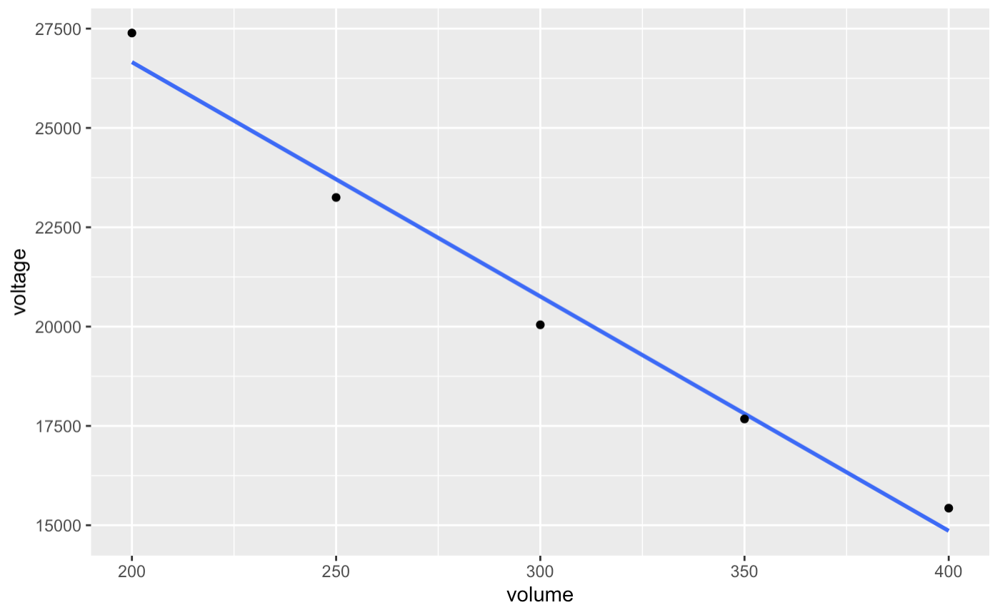
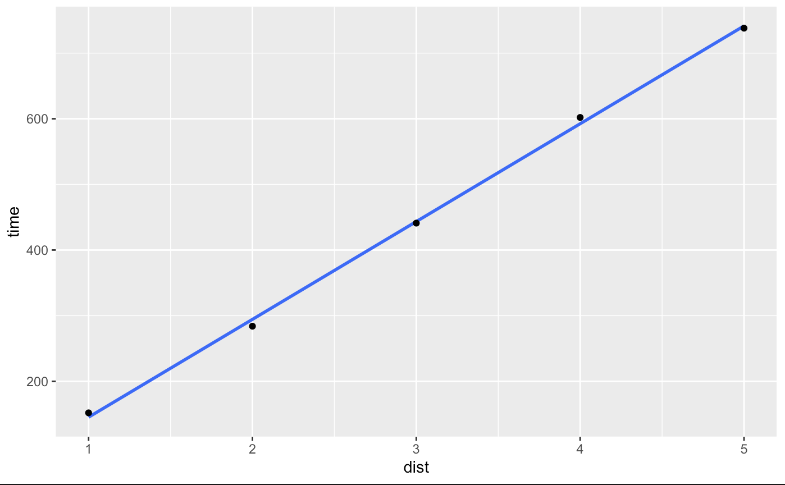

Week 6: Input Devices
Capacitive Sensor: Liquid Volume Sensor
Originally I had tried to implement a weight sensor, but the sensor would only read non garbage values (values that did not wildly fluctuate) when the two pads were touching. So I decided to switch over to try and creating a liquid Volume Sensor
How the volume sensor works it you have ot cooper plates on opposite sides of a container (they do not need to be on opposite sides just no touching). Then you have one plate hooked up to ground and the other hooked up to a pin to analogRead from (A3). You then pass current through the plates via a tx pin (4), and see the difference between current you when sending current vs not sending current through the tx pin, as the volume of water changes so does the current passing through the plates which means that if you properly calibrate your sensor you can determine the volume of water in a container by the current you read from your sensor.
Materials
- Copper Tape
- Arduino Uno
- Alligator Clips
- Jumper Wires
- 100 Ohm Resistor
- Bread Board
- Water Bottle
class Capacitor{
int tx_pin; //Top capacitor plate
int rx_pin; //Bottom capacitor plate
int high_read; //Read when top plate is charging
int low_read; //Read the resulting discharge of the top plate
int N_samples = 100;
int diff; //Find the difference between the reading the bottom plate gets when the top plate is charging and then discharges to get the result
long result;
int tx_state; //Is the top plate charging?
unsigned long previousMicros;
long capTime; //How long I want the top plate to charge
public:
Capacitor(int tp, int rp, int interval){ //Declare inputs into my class
tx_pin = tp;
rx_pin = rp;
capTime = interval;
previousMicros = 0;
pinMode(tx_pin, OUTPUT);
}
long Update()
{
unsigned long currentMicros = micros(); //Get current time
result = 0; //Reset the result
for(int i = 0; i< capTime; i++){ //If the top plate has been charging and it is now time to discharge
previousMicros = currentMicros;
digitalWrite(tx_pin,HIGH);
high_read = analogRead(rx_pin); //See what the bottom plate is reading now
digitalWrite(tx_pin,LOW);
tx_state = LOW;
low_read = analogRead(rx_pin); //See what the bottom plate is reading now
diff = high_read - low_read;
result += diff;
}
return result;
}
};
Capacitor cap1(4,A3,100); //TX on Pin 4, RX on Pin A3, charge the top plate for 100 microseconds
int data;
void setup() {
Serial.begin(9600);
}
void loop() {
// put your main code here, to run repeatedly:
data = cap1.Update();
Serial.println(data);
}
Calibration:
After measuring the voltage reported by the capactive sensor compared to the ml of water in the container the coefficient of the line of best fit was -58.99, so for every ml increase in the container the voltage reading by the capactive sensor drops by -58.99 . With the intercept being 38455.
However, one thing to note is that as I was calibrating my sensor any reading before 200 ml was giving readings with negative values and then after 200 ml the readings from the sensor became positive, but I do not know why the readings flip from negative to positive
Distance Based Laptop Volume Control
For the other sensor I chose to use an ultrasonic sensor, if I am being completely honest, because it looked like it had a pair of binoculars on. However, measure distance also seemed like it had a lot of potential for a project. One of the first ideas I had was that when you are farther away from your computer you want it to be louder and when you are closer you want it to be quieter. So I thought of making a robot that controlled the volume on your laptop by how close you are to it.
Materials
- Arduino Uno
- Jumper Wires
- Ultrasonic Sensor
- Laptop
The code works by finding the distance of the closest object to the sensor and relaying that information. It then takes that the number given by the sensor and maps it to a number between 0 and 75 (I chose the mapping I did by just playing around with it and finding what mapping was not took loud, or increase in volume to quickly or slowly)
ultrasonicSensor.ino
const int pingPin = 7; // Trigger Pin of Ultrasonic Sensor
const int echoPin = 6; // Echo Pin of Ultrasonic Sensor
void setup() {
Serial.begin(9600); // Starting Serial Terminal
}
void loop() {
long duration, inches, cm;
pinMode(pingPin, OUTPUT);
digitalWrite(pingPin, LOW);
delayMicroseconds(2);
digitalWrite(pingPin, HIGH);
delayMicroseconds(10);
digitalWrite(pingPin, LOW);
pinMode(echoPin, INPUT);
duration = pulseIn(echoPin, HIGH);
inches = microsecondsToInches(duration);
cm = microsecondsToCentimeters(duration);
Serial.println(inches);
// Serial.print("in, ");
// Serial.print(cm);
// Serial.print("cm");
// Serial.println();
delay(100);
}
long microsecondsToInches(long microseconds) {
return microseconds / 74 / 2;
}
changingVolume.py
import osascript
import serial
port = '/dev/cu.usbmodem142201' # Replace with your ESP32's serial port
ser = serial.Serial(port, 9600)
data = '10'
if ser.is_open:
print(f"Serial communication established on {port}.")
try:
while True:
# Read data from the serial port
while ser.in_waiting > 0:
data = ser.readline().decode().strip()
# Print the received data
print(f"Received data: {data}")
# print(f"output: {100/max(min(int(data)*4, 100),1)}")
osascript.osascript(f"set volume output volume {min(int(data)*8, 75)}")
except KeyboardInterrupt:
# Close the serial port when the program is terminated
ser.close()
print("Serial communication closed.")
Calibration:
After measuring the microseconds reported by the ultrasonic sensor compared to the number of inches away from the ultrasonic sensor the coefficient of the line of best fit was 149, so for every inch increase in distance from the closest object to the center it takes 149 additional microseconds to reach the sensor. With the intercept being 3.6 microseconds.